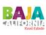
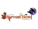
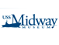

SDAR is pleased to highlight events taking place in the San Diego community that may be of interest to our members. Please check back soon for new community events.
Baja California Real Estate Professionals Host Conference
The CEPIBC (State Board of Real Estate Professionals of Baja California) hosts its annual conference in October in San Felipe, with presentations by government officials and notable leaders in the real estate industry
Schedule
Thursday, October 2, 7:00 pm - 10:00 pm
Friday, October 3, 9:00 am - 1:00 am
Saturday, October 4, 9:00 am - 11:30 pm
More Information: 
Harvest Howl to Benefit San Diego LGBT Youth Housing
The 9th Annual "Harvest Howl for Youth Housing" hosted by the Metro Area Real Estate Professionals for Young Adult Housing (MARYAH) is Thursday, October. 23, at the top of San Diego's Downtown Central Library. Guests will enjoy food from over a dozen restaurants, a hosted bar, live entertainment, a 50/50 Drawing and a fantastic silent auction. All proceeds benefit the San Diego LGBT Community Center's Youth Housing Project.
Thursday, October 23 6:00 pm - 9:00 pm
Military Book Fair Held Aboard the USS Midway Museum
The Military Book Fair features top authors who write about or cater to the military and their families. The event is sponsored by US4Warriors, a nonprofit organization that supports select veteran service organizations and support groups. Military exhibits, demonstrations, food, and activities for the whole family take place all day long.
Saturday, November 8 9:00 am - 5:00 pm
More Information: